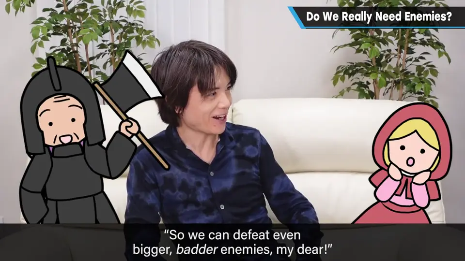
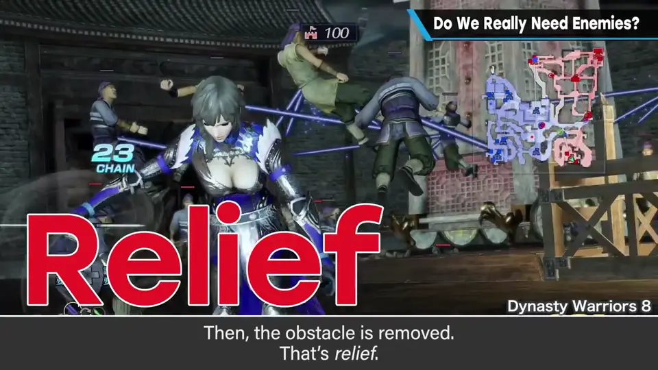
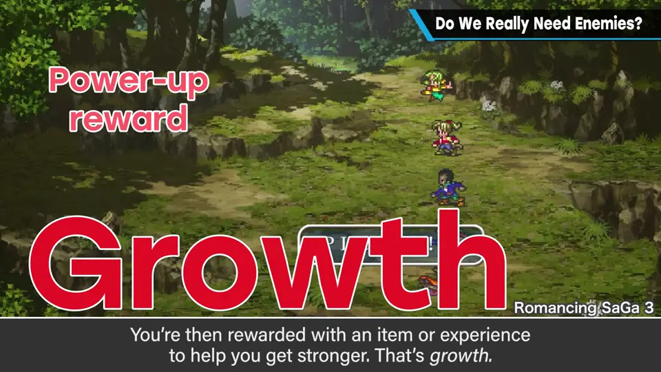
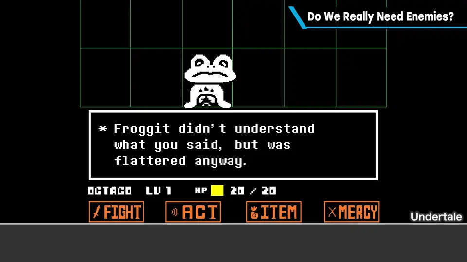
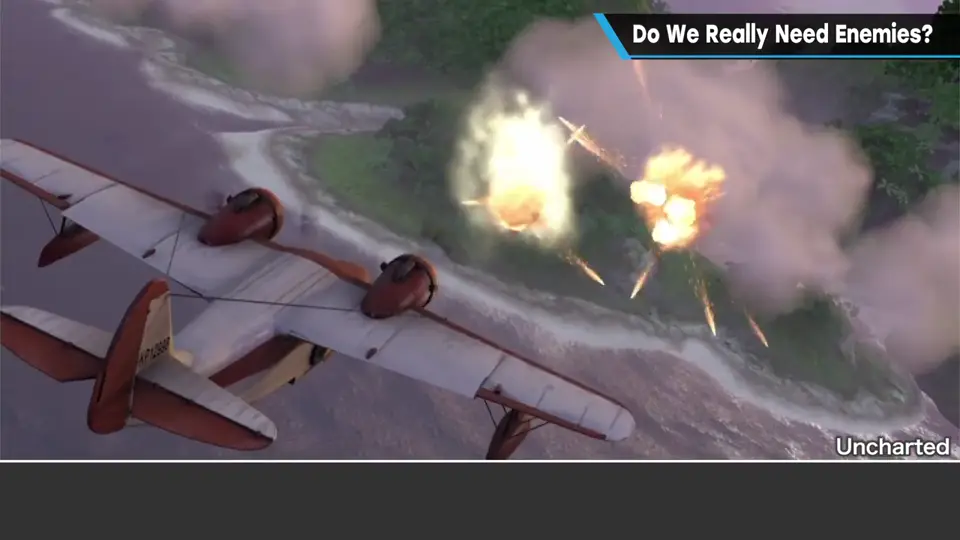
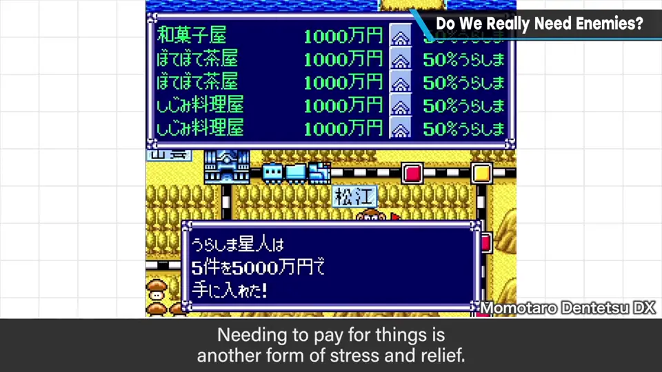

速览
「奶奶，为什么要打倒敌人？」「为了变强呀。」「为什么要变强？」「为了能打倒更强的敌人呀。」——这样说就没意思了。除了部分故事主导型和解谜游戏，大多数游戏都有要打倒的敌人；不玩游戏的人看了甚至会担心。理所当然的事有其理由，但提出疑问是好事。一般的游戏靠施加压力再释放带来乐趣，可拆成四步：压力（障碍）→ 释放（排除它，畅快）→ 成长（奖励或经验让自己变强，也带来期待）→ 进展（更容易排除下一个障碍，往前走）。后三者都是乐趣，但没有最初的压力很难成立，所以障碍是需要的。《Undertale》不打倒敌人也能通关，但仍然施加压力，不杀通关时无法直接排除，压力反而更大。压力不只来自敌人或系统：冒险游戏里主角或朋友陷入危机也是压力；支付成本也是压力与释放——资源只会无限增加、却没有用处的采掘游戏没有意义。结论：游戏可以去掉敌人，但相当于敌人的压力与释放是必要的，并尽量积极加入进展与成长。
1. 为什么要打倒敌人？ 0:04
「奶奶，为什么要打倒敌人？」「为了变强呀。」「为什么要变强？」「为了打倒更强的敌人呀。」——这么说就没意思了。
除了部分故事主导型和解谜游戏，相当多的游戏都有要打倒的敌人。不玩游戏的人从旁看，也许会担心：打倒、打倒、一直打倒，真的有必要吗？

已经理所当然的事，自有其理由；但提出疑问是好事，所以来深挖一下。
2. 压力 → 释放 → 成长 → 进展 0:59
| 阶段 | 内容 |
|---|---|
| 压力（Stress） | 障碍，也就是压力 |
| 释放（Relief） | 排除障碍——简单、畅快的瞬间 |
| 成长（Growth） | 排除后的奖励或经验让自己变强，既让人期待之后，也带来更高的满足感 |
| 进展（Progress） | 更容易排除下一个障碍，也就是能继续往前 |


3. 不打倒敌人的例子 1:49
例如《Undertale》不打倒敌人也可以通关，但它确实施加了压力。在不杀通关时，因为无法直接排除，压力可能更大；而释放时格外痛快，也让人期待更好的进展。

- 掌管压力的不一定是直接的敌人或游戏系统：冒险游戏中主角或朋友遇到危机，也是压力；设法化解、往前推进，也有相应的乐趣和喜悦。
- 支付成本也是压力与释放：有支付，积攒才变得有趣。资源无限增加却毫无用途的采掘游戏，没有意义吧？


4. 结论 2:55
障碍"] --> R["释放
排除"] R --> G["成长
奖励 · 经验"] G --> P["进展
更容易排除下一个障碍"] P --> S
自测题
1. 樱井把游戏的乐趣拆成哪四个阶段？
压力（障碍）→ 释放（排除）→ 成长（奖励/经验变强）→ 进展（更容易排除下一个障碍，往前推进）。 0:59
2. 《Undertale》不打倒敌人也能通关，说明了什么？
敌人可以去掉，但压力仍要施加；不杀通关时无法直接排除，压力可能更大，释放时也格外痛快。 1:52
3. 除了敌人，还有哪些东西能扮演「压力」？
冒险游戏中主角或朋友遭遇危机；支付成本（有支付，积攒才有趣）。 2:10